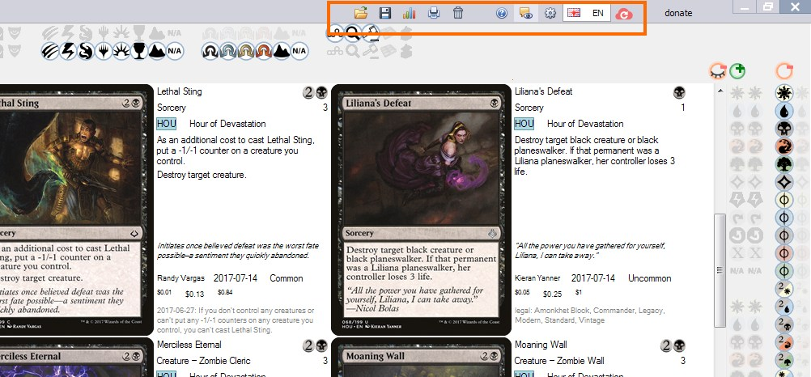

Buttons in window header
Undo / redo buttons
Are located at the top left of the window in the header. Undo, Redo apply to many
end-user actions like checking / unchecking Filter buttons, changing search text and so on.

Buttons in the window header right side
{kind=link}
Clipboard operations
Opens a menu to copy / paste deck or collection cards, see detalis.
Load or save deck or collection
Supported are formats of
- Forge
- Magarena
- XMage
- Magic The Gathering Online *.txt deck and collection files
- Decked Builder
- Cockatrice supports the format used by Magarena
- To use your decks with Riiak's DotP 2014 Deck Builder use a modified version supporting Forge deck format
Diagrams
Opens Diagrams window. Use it to view mana curve, price breakdown,
or create a custom report by specifying argument, series and summary fields.
Print deck
The print buttons doesn't actually print, instead it creates images of cards by groups of 8 that can be printed on A4 paper.
Clear deck
Use it to start creating a new deck from scratch.
When Main deck zone is selected the button clears all deck zones.
When Sideboard or Sample hand zones are selected, only selected zone
gets cleared.
Help
This is how you probably got to read this file.
Enable / disable tooltips
Tooltips are helpful but also annoying.
Advanced settings
Opens configuration file.
Use it to tell the program where to find your custom card images or tweak some other settings.
NOTE: Configuration file is opened by whatever application you have associated with *.xml files.
If it's Internet Explorer, you need to assign *.xml extension to a text editor instead. I recommend
using an editor with XML syntax highlighting e.g. Notepad++.
NOTE: To apply your changes save the modified configuration file and restart the program.
Language selector
The Language selector affects the cards' texts only. The User Interface is allways in English.
Update
Shows update window where you can
- Check for a new version of Mtgdb.Gui
- Download the most recent cards database from Mtgjson.com
- Download card images
- Download artworks